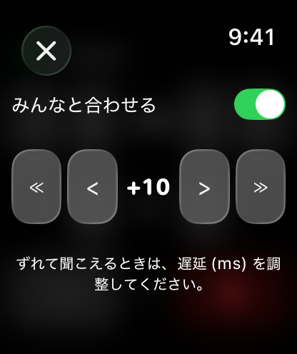
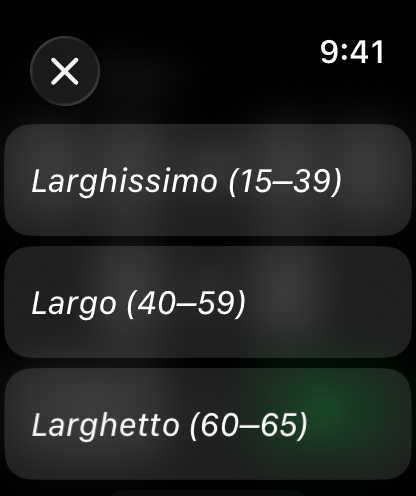

メトロノーム ウオッチスペシャル
Apple Watch のためのシンプルで正確なメトロノーム。15〜240 BPM、1小節1〜9拍、音と触覚に対応。「みんなと合わせる」をオンにすると、同じテンポに設定した複数の Watch が同時に鳴ります。ペアリングは不要です。手首を下げても鳴り続け、iPhone も必要ありません。
watchOS 8以降が必要です。
ダウンロード


サポート
ご質問、不具合の報告、アプリの使い方でお困りのことがあれば、お気軽にご連絡ください。いただいたメッセージはすべて確認しています。
お問い合わせの前に
まず次の点をお試しください。
- アプリが反応しない場合 Digital Crown を2回押して起動中のアプリを表示し、メトロノームのカードを上にスワイプして終了します。その後、アプリ一覧から開き直してください。
- 音が鳴らない場合 Digital Crown で音量が上がっているかご確認ください。Apple Watch がサイレントモードになっていないかも合わせてご確認ください。
- 触覚が働かない場合 ⏚ ボタンが表示されているか（触覚がオンの状態か）ご確認ください。⚡︎ が表示されている場合はタップして触覚をオンにします。Apple Watch の「設定」→「サウンドと触覚」も合わせてご確認ください。
- テンポがずれる、途中で止まる場合 バックグラウンドでの再生には、アプリが動作し続けている必要があります。アプリを開き直して、もう一度スタートしてください。
- Watch どうしがずれて聞こえる場合 すべての Watch で「みんなと合わせる」がオンになっていることをご確認ください。各 Watch のテンポと1小節の拍数が同じかどうかもご確認ください。テンポが同じでも拍数が違うと、リズムがずれる原因になります。Bluetooth のイヤフォンを使っている Watch では、最大 100 ms ほど遅れることがあります。この差は遅延の設定で調整できます。
よくあるご質問
- iPhone がなくても使えますか。
はい。Apple Watch だけで完結します。 - 手首を下げても動きますか。
はい。音と触覚はそのまま続きます。 - 設定は記憶されますか。
はい。前回のテンポ、1小節の拍数、触覚の設定は、次にアプリを開いたときに復元されます。 - 運動にも使えますか。
はい。15 BPM からの遅いテンポはローイングのストロークレートに、速いテンポはランニングやウォーキングのケイデンスに向いています。 - 「みんなと合わせる」では Watch 同士をどうやってペアリングしますか。
ペアリングはしません。各 Watch が自分の時計から拍を導き出すため、ペアリングも通信も、Watch 同士のつながりもありません。全員が同じテンポと同じ拍数に設定する、それだけです。 - 「みんなと合わせる」は何台まで一緒に使えますか。
台数に制限はありません。互いに通信していないので、上限もありません。3台以上のときは1台を基準に決めて、ほかの全員がその1台に合わせて遅延を調整してください。隣の人に順番に合わせていくと、わずかな差が積み重なって両端がずれていきます。 - 「みんなと合わせる」がオンのとき、メトロノームの開始が遅いのはなぜですか。
共通の拍に加わるため、次の拍まで待ってから始まります。通常のテンポでは1秒未満ですが、1拍が4秒になる15 BPM では最大4秒ほどかかります。 - データは収集されますか。
いいえ。収集も共有も一切行っていません。 - ⏚ ボタンは何ですか。
触覚が現在オンであることを示します。タップするとオフになります。 - ⚡︎ ボタンは何ですか。
触覚が現在オフであることを示します。タップするとオンになります。 - 音だけ、触覚だけで使えますか。
はい。音量を下げれば触覚だけになり、触覚をオフにすれば音だけになります。 - 音が二重に聞こえます。これは正常ですか。
Apple Watch がサイレントモードでない場合、触覚エンジンの動作音がアプリのビート音と重なって聞こえることがあります。アプリの音だけを聞くには、Apple Watch をサイレントモードにしてください。
使い方



基本の操作
- < > と ≪ ≫ のボタンで BPM を調整します
- テンポ名（例：「Allegro」）をタップすると、プリセットの一覧から選べます
- 2段目の < > ボタンで1小節の拍数を調整します
- ⏚ ボタン（タップでオフ）または ⚡︎ ボタン（タップでオン）で触覚を切り替えます
- Digital Crown で音量を調整します
- 緑の再生ボタンで開始し、赤の停止ボタンでリセットします
みんなと合わせる
画面左上の人型のアイコンをタップし、「みんなと合わせる」をオンにします。これにより、拍は再生ボタンを押した時点ではなく時計の時刻から導き出されるようになり、同じテンポ、同じ拍数に設定したApple Watchは同じ拍に揃います。ペアリングも通信も設定も不要で、全員が同じテンポを選ぶだけです。
オンのときは、再生は次の拍まで待ってから始まります。通常のテンポでは1秒未満ですが、1拍が4秒になる15 BPMでは最大4秒ほど待つことになります。
自分のWatchだけずれて聞こえるときは、同じ画面で遅延を調整します。操作はメイン画面の BPM の行と同じで、< と > が 1 ms ずつ、≪ と ≫ が 10 ms ずつ動き、前後 250 ms まで設定できます。プラスにするとこのWatchは遅く、マイナスにすると早く鳴ります。
遅延は音声の出力先ごとに保存されるため、本体スピーカーの設定と Bluetooth の設定が互いに上書きされることはありません。
テンポ一覧
| テンポ | BPM の範囲 | 速さの目安 |
|---|---|---|
| Larghissimo | 15 – 39 | きわめて遅く |
| Largo | 40 – 59 | 非常に遅く、幅広く |
| Larghetto | 60 – 65 | やや遅く |
| Adagio | 66 – 75 | 遅く、落ち着いて |
| Andante | 76 – 99 | 歩く速さで |
| Andantino | 100 – 109 | Andante より少し速く |
| Moderato | 110 – 119 | 中くらいの速さで |
| Allegro | 120 – 167 | 速く、快活に |
| Presto | 168 – 199 | 非常に速く |
| Prestissimo | 200 – 240 | きわめて速く |
法的情報
プライバシーポリシー
最終更新: 2026年7月
はじめに
メトロノーム ウオッチスペシャルをご利用いただきありがとうございます。当社はお客様のプライバシーを尊重し、保護することをお約束します。本プライバシーポリシーでは、当社が収集する情報、この場合は収集しない情報の種類と、プライバシーを守るための方法について説明します。
収集しない情報
メトロノーム ウオッチスペシャルは、データを一切収集しないという原則のもとに設計されています。お客様の個人データを収集、保存、利用、共有、転送することはありません。アプリはすべて Apple Watch 上で動作し、サーバー上でデータを処理または保存することはありません。
メトロノームの設定は、次回アプリを開いたときに復元できるようにするため、Apple Watch 上にのみ保存されます。
第三者のサービス
メトロノーム ウオッチスペシャルは、解析ツール、広告ネットワーク、ソーシャルメディアなど、いかなる第三者のサービスとも連携していません。第三者とデータを共有することはありません。
子どものプライバシー
当社はデータを一切収集していないため、児童オンラインプライバシー保護法（COPPA）など、子どものプライバシーに関するすべての関連規制を遵守しています。
本ポリシーの変更
本プライバシーポリシーは随時更新される場合があります。変更の有無について、このページを定期的にご確認ください。変更はこのページに掲載された時点で有効となります。
お問い合わせ
本プライバシーポリシーについてご質問やご提案がある場合は、次のアドレスまでお気軽にご連絡ください: support [at] hoshinosoftware [dot] com